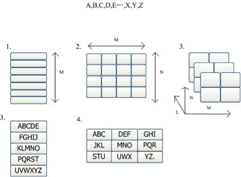

<!DOCTYPE html>
<html>
  <head>
    <title>Smile...There is a moon</title>
    <meta name="viewport" content="width=device-width, initial-scale=1.0">
    <meta name="keywords" content="Xiaoyue Wang, Jessica Wang">
    
    <link href="css/bootstrap.min.css" rel="stylesheet">
    <link href='http://fonts.googleapis.com/css?family=Source+Sans+Pro:300' rel='stylesheet' type='text/css'>
    <link href="css/style.css" rel="stylesheet">
  </head>
  <body>
    <div class="navbar navbar-default navbar-fixed-top" role="navigation" style="height: 70px;">
      <div class="container" style="height: 70px;">
        <div class="navbar-header" style="height: 70px;">
        	<button type="button" class="navbar-toggle" data-toggle="collapse" data-target=".navbar-collapse">
        	  <span class="sr-only">Toggle navigation</span>
        	  <span class="icon-bar"></span>
        	  <span class="icon-bar"></span>
        	  <span class="icon-bar"></span>
        	</button>
          <!--<a class="navbar-brand" style="height: 70px;font-size: 30;" href="index.html">Jessica Wang</a>-->
          <a class="navbar-brand" href="index.html"></a>
        </div>
        <div class="navbar-collapse collapse" style="height: 70px;">
        	
          <ul class="nav navbar-nav navbar-right" id="nav" style="padding: 13px;font-size: 16px;">
            <li><a href="index.html#">PORTFOLIO</a></li>
            <li><a href="index.html#">ABOUT</a></li>
            <li><a href="XiaoyueWangCV.pdf#" target="_blank">RESUME</a></li>
          </ul>
        </div>
      </div>
    </div>
    
    

    
    <!-- Project info -->
    <div class="container marketing">
	    <div class="row featurette first-featurette">
		    <div class="col-md-6 nav-left">
			    <!-- <a href="#">&larr; Previous</a> -->
			</div>
			
		    <div class="col-md-9">
			    <h1 class="featurette-heading">One Bit Text Entry System</h1>
			    <p class="lead" id="about-lead">This is my research project while I was workng in Tsinghua University, Beijing, China.</p>
<p>&nbsp;</p>
<p><strong>About</strong></p>
<p>Except for the prevalent data interaction, new methods like voice interaction and behavior interaction, all have specific requirements for users, e.g., being able to talk for speech recognition and move for gesture recognition. Such expensive equipments with complicated mechanisms are not practical for disabled people, who have massive need but are hardly met. Thus, we worked on the design and development of a One-Bit input method, not only to make their communication easier, but to improve accuracy and save costs at the same time. We proposed an interface with a highlight going through each key, and the user simply types in and selects words from a wordlist.</p>
<p><strong>Framework of SAK (Scanning Ambiguous Keyboard) design</strong></p>
<p>To balance the three essential elements, we proposed a unified framework for one bit based SAK design.</p>
<p></p>
<p>The scanning of 26 English characters in a SAK can be categorized into three classes: one-dimensional, two-dimensional and three-dimensional scanning keyboard (1D-SAK, 2D-SAK, and 3D-SAK), as shown below. 1D-SAK puts all the M keys in a column, and the highlight moves one-by-one from up to down over the keys. This keyboard can also be designed as a rolling wheel with a visible window. The keys move through the visible window one-by-one when the keyboard wheel rolls.<br />
2D-SAK organizes the keys into an MN array. The scanning of the keys is first row-by-row then column-by-column or vise versa. The M N array of keys can be further sorted into a multi-layered array, which is a three-dimensional scanning keyboard (3D-SAK). Its dimension is MNL. A key selection should have three times of key-press in this case.</p>
<p><strong>Navigation Map of 1D-SAK</strong></p>
<p>For practical use, obviously there is much more to consider systematically in the SAK framework. We need to type words, letters and symbols (including punctuation) in real world application. Apart from that, function keys should be considered as well, e.g., delete, go back, look for more words, etc. Based on the reference design of 1D-SAK, we developed a full text entry system by integrating words, letters, symbols, and functions all together into the high efficiency, easy learning 1D-SAK framework. As seen in the implementation schema (see figure in below), the interface consists of two parts: 1) capital letters in alphabetic orders on the left of arrows, 2) letters, words, and punctuation displayed on the right of the arrows. The left part is stable while the right part changes according to user's indication. When a key of 1D-SAK (figure, left) is clicked, the system extends all the letters on that key into six separate keys (The up row in the figure). In a nut shell, letters input has one level menu, words input can have multi-level menu depending on words frequency, and symbols input has two level menus.<br />
</p>
<p><strong>Prototyping and Coding</strong></p>
<div class="embed-vimeo" style="text-align:center;"><iframe src="http://www.youtube.com/embed/Wc1cUlspjw8?rel=0" width="700" height="393" frameborder="0" webkitallowfullscreen mozallowfullscreen allowfullscreen></iframe></div>
<p>At the start of the program, without indicating specific input, the right column shows the top five frequent words from a 400,000 English corpus. The first time a key of letters from the left column is clicked, letters are expanded on the right column with a "CapsLock" key on the top of the column.</p>
<p><strong>One-Bit Input Devices</strong></p>
<p>In real world, users have different physical impairments and need special devices for interaction. We have developed prototypes of input devices shown below.</p>
<p></p>
<p><strong>User Studies</strong></p>
<p>A quick pretest with 3 participants for the 1D-SAK with non diseased people showed that the interface was more difficult to operate with for people whose first language is not based on the Latin alphabet. To avoid potential language mistakes, English native speaking students were used as test persons. The programs were tested with non parkinson diseased people first to gather shallow usability problems and critical incidents before identifying the ones more specific to the target group. During the experiments, we were using the Thinking Aloud-Method to record participants' thoughts.<br />
We made usability report for each subject. Based on their feed back, the program in general has high learnability and good satisfaction. Although as healthy people, they sometimes find it slow, but they all believe this could be very beneficial for disabled people and they love this new way of typing. In a nut shell, users are impressed by the idea and find it interesting interacting with only one finger.<br />
The 1D-SAK system was further tested with parkinson patients in the hospital of University of South Florida (USF). The patients were trained within three to five minutes via demonstrations, and then asked to text in a sentence they were thinking with one key input device. In the test, one of them input a name of rare wine which made him proud of it. The patients were especially satisfied with the send mail or SMS option.<br />
These studies proved that the system is helpful for disabled or diseased users, and very easy to learn. The simple structure enables a high learnability curve and a fast interaction with the program. It is not only a tool for allowing handicapped people to text quicker, but also for integrating them in the lives of their friends and family.</p>
<p><br />


			
		    </div>
		    <div class="col-md-3 project-sidebar">
			    <div class="project-info">
          <h4>Final Deliverables</h4>
          <p>Software Prototype</p>
          <h4>Timeline</h4>
          <p>May 2012 - Jun 2013</p>
          <h4>Teammates</h4>
          <p>Markus Huber (University of Siegen, Germany)<br>
            Shan Li (Georgia Institute of Technology)<br>Xuan Zhu (University of Michigan)<br>
          <p>The research was led by Professor <a href="http://www.tsinghua.edu.cn/publish/csen/4623/2010/20101224172944081935675/20101224172944081935675_.html" target="_blank" style="color: rgb(55,177,229); text-decoration: none;">Linmi Tao</a>. </p></p>
            <h4>My Role</h4>
              <p>Programmer<br>
                UX researcher</p>
					<h4>My Major Contributions</h4>
					<p>Initial calculation of typing efficiency<br>
            Programmed using C# with MS Visual Studio; UX research</p>
				    <h4>UX Methods</h4>
				    <p>Ideation<br>
					    Wireframming<br>
					    Think-Aloud<br>
					    </p>
		    </div>
		    <div class="col-md-8">
			    
			</div>
		</div>
	</div>

    
    <script src="js/jquery-1.10.2.min.js"></script><!-- jQuery -->
    <script src="js/bootstrap.min.js"></script><!-- Bootstrap -->

    <script src="js/main.js"></script><!-- Main -->


<script>
  (function(i,s,o,g,r,a,m){i['GoogleAnalyticsObject']=r;i[r]=i[r]||function(){
  (i[r].q=i[r].q||[]).push(arguments)},i[r].l=1*new Date();a=s.createElement(o),
  m=s.getElementsByTagName(o)[0];a.async=1;a.src=g;m.parentNode.insertBefore(a,m)
  })(window,document,'script','//www.google-analytics.com/analytics.js','ga');

  ga('create', 'UA-44938135-1', 'xiaoyuew.com');
  ga('send', 'pageview');

</script>


    
  </body>
</html>
<!-- Localized -->